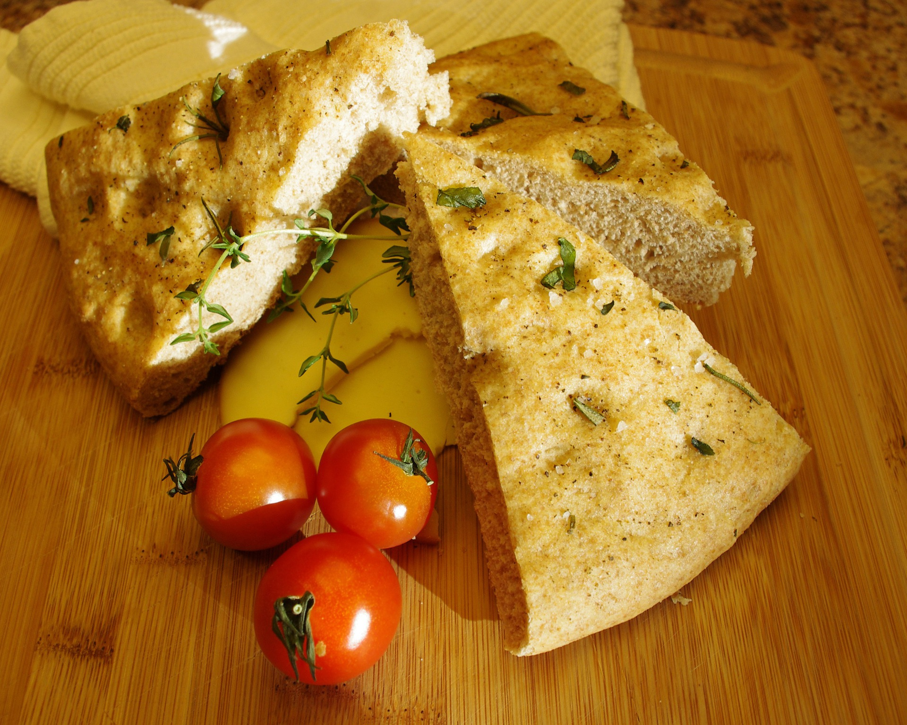

Focaccia
  15min
15min
 simpel
simpel
 5.10.2022
5.10.2022
15min
simpel
5.10.2022
Zutaten für
Arbeitszeit ca. 30 Minuten
Gesamtzeit ca. 75 Minuten
1. Mehl, Zucker, Hefe und Salz in einer großen Rührschüssel mit einem Schneebesen vermischen.
2. Wasser und Olivenöl dazu gießen und alles mit einem Teigschaber (oder Holzlöffel) verrühren, bis die Mischung zusammenklumpt.
3. Dann auf eine Arbeitsfläche geben und den Händen ca. 5-10 Minuten kneten (oder eine Küchenmaschine mit Knethaken verwenden), bis sich ein glatter geschmeidiger Teig bildet. (Wenn der Teig viel zu klebrig ist, füge mehr Mehl hinzu, aber versuche, so wenig Mehl wie möglich zu verwenden, wenn du ein weiches Focaccia möchtest.)
4. Den Teig anschließend zu einer Kugel formen und in eine leicht geölte Schüssel legen. Die Schüssel mit einem Küchentuch abdecken und an einen warmen Ort stellen (ich stelle meine gerne ans Sonnen-Fenster). Lasse den Teig dort 45-60 Minuten gehen, bis sich der Teig fast verdoppelt hat.
5. Anschließend den Teig auf eine leicht bemehlte Oberfläche geben und zu einem ca. 1cm dicken großen Rechteck (oder Kreis) ausrollen (*siehe Notiz). In eine geölte Backform legen (oder großes Backblech) legen und mit den Händen in die Ecken ziehen. Die Form abdecken und den Teig weitere 20 Minuten gehen lassen.
6. Währenddessen den Ofen auf 200°C vorheizen (ca. 10 Minuten bevor der Teig komplett aufgegangen ist).
7. Nach der Ruhezeit mit dem Stiel eines Kochlöffels oder mit den Fingern Löcher in den Focaccia-Teig drücken, wie auf den Bildern oben zu sehen ist. Dann die Kirschtomaten, Oliven und Rosmarin auf den Teig legen und leicht hineindrücken. Zuletzt ca. 1-2 EL Olivenöl gleichmäßig über den Teig träufeln und mit Salz und Paprikapulver bestreuen.
8. Das Focaccia ca. 20 Minuten backen oder bis der Teig leicht goldbraun und durchgebacken ist. Anschließend aus dem Ofen nehmen und auf Wunsch mit etwas mehr Olivenöl beträufeln.
9. In Scheiben oder Stücke schneiden und warm genießen!
Sebastian